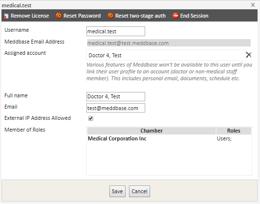
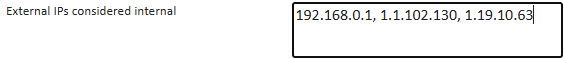

As a default, the system only allows Internal IP Addresses to have access to the Meddbase environment. You can however choose to have External IP Addresses allowed access to the environment as well.
What is an Internal IP Address? Internal IP addresses are any IP address that is on premises. Where you're conducting the work e.g. the clinic or the office.
What are External IP Addresses? External IP addresses are any IP address which are not on premises, or where you are not connected to the office network. This includes home, and whilst travelling.
Limiting access to your system for external IP’s is an effective security process. If a user has ‘External IP Address Allowed’ checked within the User Management page (as seen below), then they will be able to access Meddbase from an unidentified IP address.

The purpose of this article is to show you how to enable Meddbase system access from External IP Addresses. This will open the system up for users to work from locations other than on premises.
To list the IP addresses that are allowed access to your system go to Start Page > Admin > Configuration. Within the ‘Application’ section you will see a box labelled ‘External IPs considered internal’, use this box to label the IPs.
To include multiple IP’s simply use a comma to separate the list, shown in the image below.
